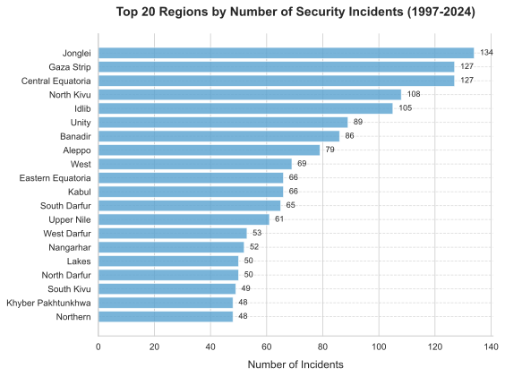
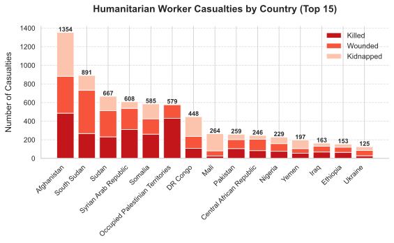
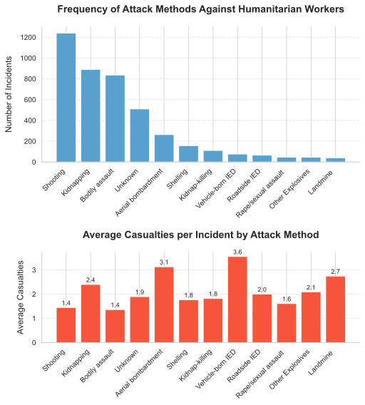
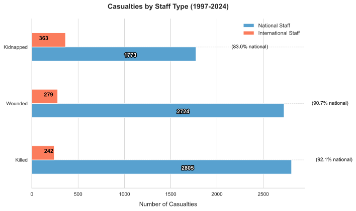
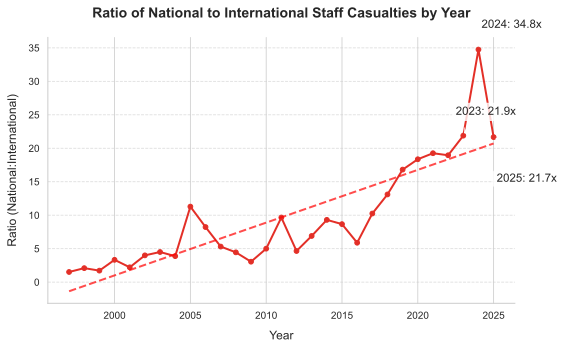
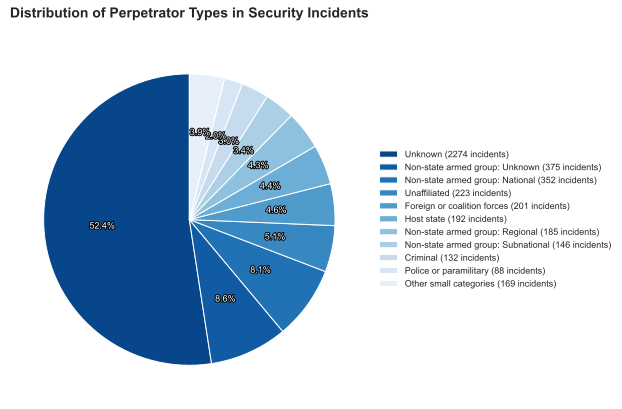
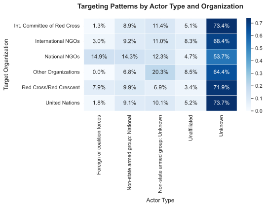
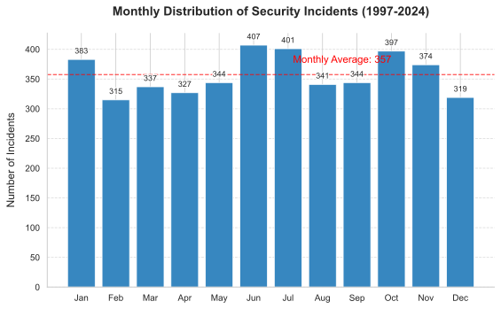
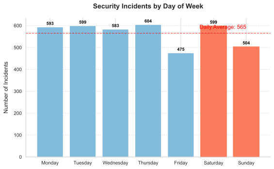

“The ultimate tragedy is not the brutality of the bad people, but the silence of the good people.”
— Martin Luther King Jr.
Executive Summary
This analysis explores security threats facing humanitarian aid workers worldwide based on over 4,300 incidents from 1997 to 2025. Through data visualization and analysis, we uncover patterns that can help organizations better protect their personnel and operations.
Key findings include:
A dramatic 900% increase in security incidents over time (from 34 in 1997 to 353 in 2024)
Geographic concentration of high-risk areas in South Sudan, Syria, Afghanistan, and Gaza
Shootings, kidnappings, and assaults emerging as the predominant attack methods
An alarming vulnerability gap between national and international staff, with national staff bearing over 80% of casualties
A concerning pattern of unidentified perpetrators (52% of incidents), hindering accountability
Our visualizations tell a compelling story of increasing danger for humanitarian workers and highlight critical areas where protective measures are most needed.
1. The Escalating Crisis: Incidents Over Time
Code
# Group by year and count incidentsyearly_incidents = df.groupby('Year').size().reset_index(name='Incidents')# Calculate year-over-year percent changeyearly_incidents['YoY_Change'] = yearly_incidents['Incidents'].pct_change() *100# Create a figure with two subplots - one for the trend and one for YoY changefig, (ax1, ax2) = plt.subplots(2, 1, figsize=(8, 7), height_ratios=[2, 1], gridspec_kw={'hspace': 0.3})# Plot incidents over timebars = ax1.bar(yearly_incidents['Year'], yearly_incidents['Incidents'], color=main_palette[2], alpha=0.8)ax1 = style_plot(ax1, 'Total Security Incidents by Year', '', 'Number of Incidents')# Add a trend linex = yearly_incidents['Year']y = yearly_incidents['Incidents']z = np.polyfit(x, y, 1)p = np.poly1d(z)ax1.plot(x, p(x), "r--", alpha=0.7, linewidth=2)# Add milestone annotations milestones = {2003: ('Iraq War (2003)', 0.6),2011: ('Arab Spring (2011)', 0.18), 2013: ('S. Sudan Civil War (2013)', 0.7),2014: ('Rise of ISIS (2014)', 0.1),2020: ('COVID-19 Pandemic (2020)', 0.9),2022: ('Russia-Ukraine War (2022)', 0.25)}for year, (event, vert_pos_factor) in milestones.items():if year in yearly_incidents['Year'].values: idx = yearly_incidents[yearly_incidents['Year'] == year].index[0] incidents = yearly_incidents.loc[idx, 'Incidents'] max_height = ax1.get_ylim()[1]# Position the annotation at a percentage of max height vert_pos = vert_pos_factor * max_height# Draw a line to the bar ax1.annotate("", xy=(year, incidents), xytext=(year, vert_pos), arrowprops=dict(arrowstyle="-", color="gray", alpha=0.7))# Add the text annotation ax1.annotate(f"{event}\n({incidents} incidents)", xy=(year, vert_pos), xytext=(0, 5), textcoords="offset points", ha='center', va='bottom', bbox=dict(boxstyle="round,pad=0.3", fc="white", alpha=0.9), fontsize=8)# Plot YoY percentage changebars2 = ax2.bar(yearly_incidents['Year'][1:], yearly_incidents['YoY_Change'][1:], color=[accent_palette[1] if x <0else accent_palette[5] for x in yearly_incidents['YoY_Change'][1:]])ax2 = style_plot(ax2, 'Year-over-Year Change in Incidents (%)', 'Year', 'Percent Change (%)')ax2.axhline(y=0, color='gray', linestyle='-', alpha=0.7)# Format y-axis with percent signax2.yaxis.set_major_formatter(ticker.PercentFormatter(decimals=0))plt.tight_layout()plt.show()
The data reveals a disturbing upward trend in attacks on humanitarian workers. From just 34 incidents in 1997, the number surged to 353 in 2024—a staggering 938% increase.
This trend correlates strongly with major global conflicts. The Iraq War (2003) marked the beginning of a steady rise, while the Arab Spring (2011), South Sudan Civil War (2013), and ISIS’s emergence (2014) all contributed to significant increases. More recently, the COVID-19 pandemic and Russia-Ukraine War coincided with continued high rates of attacks.
The year-over-year percentage changes (bottom chart) illustrate the volatility, with some years showing over 50% increases. Even in years with modest decreases, the overall trajectory remains sharply upward.
This erosion of humanitarian protection has critical implications: when aid workers become targets, vulnerable populations suffer doubly—first from the conflict or disaster that created their needs, and second from diminished assistance when security concerns hamper operations.
2. Dangerous Ground: Geographic Distribution of Risk
Code
# For regions analysis, we'll filter out "Unknown" region as it doesn't provide actionable insights# This is a data cleaning decision based on the fact that Unknown regions don't help with geographic targetingfiltered_regions = df[df['Region'] !='Unknown']# Count incidents by region, sort and take top 20region_counts = filtered_regions['Region'].value_counts().reset_index()region_counts.columns = ['Region', 'Incidents']top_regions = region_counts.head(20).sort_values('Incidents')# Create horizontal bar chart for top regionsfig, ax = plt.subplots(figsize=(8, 6))bars = ax.barh(top_regions['Region'], top_regions['Incidents'], color=main_palette[3], alpha=0.8)# Add data labelsfor i, v inenumerate(top_regions['Incidents']): ax.text(v +2, i, str(v), va='center', fontsize=9)# Style the plotax = style_plot(ax, 'Top 20 Regions by Number of Security Incidents (1997-2024)', 'Number of Incidents', '')plt.tight_layout()plt.show()# Note: We've removed "Unknown" regions from this analysis as they don't provide actionable geographic insights.# This represents a data cleaning decision to focus on known locations where specific security measures can be implemented.

Figure 2: Top 20 Most Dangerous Regions for Humanitarian Workers
Code
# Aggregate casualties by countrycasualties_by_country = df.groupby('Country')[['Total killed', 'Total wounded', 'Total kidnapped']].sum().reset_index()casualties_by_country['Total casualties'] = casualties_by_country[['Total killed', 'Total wounded', 'Total kidnapped']].sum(axis=1)top_countries = casualties_by_country.sort_values('Total casualties', ascending=False).head(15)# Create a stacked bar chart for casualties by countryfig, ax = plt.subplots(figsize=(8, 5))# Plot stacked barsbars1 = ax.bar(top_countries['Country'], top_countries['Total killed'], label='Killed', color=accent_palette[6])bars2 = ax.bar(top_countries['Country'], top_countries['Total wounded'], bottom=top_countries['Total killed'], label='Wounded', color=accent_palette[4])bars3 = ax.bar(top_countries['Country'], top_countries['Total kidnapped'], bottom=top_countries['Total killed'] + top_countries['Total wounded'], label='Kidnapped', color=accent_palette[1])# Add data labels for total casualties with better visibilityfor i, country inenumerate(top_countries['Country']): total = top_countries.loc[top_countries['Country'] == country, 'Total casualties'].iloc[0] ax.text(i, total +10, f'{int(total)}', ha='center', fontsize=9, fontweight='bold', path_effects=[pe.withStroke(linewidth=2, foreground='white')])# Style the plotax = style_plot(ax, 'Humanitarian Worker Casualties by Country (Top 15)', '', 'Number of Casualties')plt.xticks(rotation=45, ha='right')plt.legend(loc='upper right')plt.tight_layout()plt.show()

Figure 3: Humanitarian Worker Casualties by Country (Top 15 Countries)
Interactive Map: Use the dropdown menu in the top right corner to view total incidents, killed, wounded, or kidnapped aid workers by country. Hover over countries to see detailed statistics.
Code
# Import required librariesimport plotly.graph_objects as goimport pycountryimport numpy as np# Convert country codes from Alpha-2 to Alpha-3 format (required by Plotly)def alpha2_to_alpha3(code):if pd.isnull(code):returnNonetry:return pycountry.countries.get(alpha_2=code).alpha_3except (AttributeError, KeyError):returnNone# Add Alpha-3 code columndf['Country Code Alpha-3'] = df['Country Code'].apply(alpha2_to_alpha3)# Aggregate data by countrydf_map = df.groupby(['Country', 'Country Code Alpha-3']).agg( Incidents=('Incident ID', 'count'), Total_Killed=('Total killed', 'sum'), Total_Wounded=('Total wounded', 'sum'), Total_Kidnapped=('Total kidnapped', 'sum')).reset_index()# Create map visualizationcolor_scale ='Reds'# Use red gradient to show severityfig = go.Figure()# Create a Choropleth layer for each metricfor i, metric inenumerate(['Incidents', 'Total_Killed', 'Total_Wounded', 'Total_Kidnapped']):# Process data, replace 0 values with NaN to avoid showing them on the map z_values = df_map[metric].copy() z_masked = np.where(z_values ==0, np.nan, z_values)# Set visibility (only first metric initially visible) visible =Trueif i ==0elseFalse# Create Choropleth layer fig.add_trace(go.Choropleth( locations=df_map['Country Code Alpha-3'], z=z_masked, text=df_map['Country'], colorscale=color_scale, colorbar_title=metric.replace('_', ' '), zmin=1, # Start from 1 to avoid including areas with no data zmax=df_map[metric].quantile(0.95), # Use 95th percentile to avoid extreme values distorting the color scale visible=visible, hovertemplate='<b>%{text}</b><br>'+'Incidents: %{customdata[0]}<br>'+'Killed: %{customdata[1]}<br>'+'Wounded: %{customdata[2]}<br>'+'Kidnapped: %{customdata[3]}<extra></extra>', customdata=np.stack([df_map['Incidents'], df_map['Total_Killed'], df_map['Total_Wounded'], df_map['Total_Kidnapped']], axis=-1) ))# Add dropdown menu to switch between different metricsfig.update_layout( title=dict( text="Attacks on Humanitarian Workers by Country (1997-2024)", y=0.93, ), margin=dict(l=0, r=0, t=80, b=0), height=450, # Control map height width=700, # Control map width geo=dict( showframe=False, showcoastlines=True, projection_type='equirectangular' ), updatemenus=[dict( buttons=list([dict(label="Total Incidents", method="update", args=[{"visible": [True, False, False, False]}, {"title.text": "Total Security Incidents by Country (1997-2024)"}]),dict(label="Total Killed", method="update", args=[{"visible": [False, True, False, False]}, {"title.text": "Total Humanitarian Workers Killed by Country (1997-2024)"}]),dict(label="Total Wounded", method="update", args=[{"visible": [False, False, True, False]}, {"title.text": "Total Humanitarian Workers Wounded by Country (1997-2024)"}]),dict(label="Total Kidnapped", method="update", args=[{"visible": [False, False, False, True]}, {"title.text": "Total Humanitarian Workers Kidnapped by Country (1997-2024)"}]) ]), direction="down", showactive=True, x=0.85, # Positioned in top right xanchor="right", y=1.1, # Moved above the figure for better visibility yanchor="top" ) ], annotations=[dict( x=0.8, y=1.05, xref="paper", yref="paper", text="View by:", showarrow=False, font=dict(size=10) ),dict( x=0.5, y=-0.1, xref="paper", yref="paper", text="Interactive Map of Humanitarian Worker Security Incidents", showarrow=False, font=dict(size=12) ) ])fig.show()
(a) Interactive Map of Humanitarian Worker Security Incidents
(b)
Figure 4
The geographic distribution of incidents reveals clear patterns of risk concentration. After removing “Unknown” regions (which don’t provide actionable insights), we can see that:
South Sudan emerges as a primary hotspot, with three regions (Jonglei, Central Equatoria, and Unity) among the top 10 most dangerous areas.
Syria contains two of the most perilous regions (Idlib and Aleppo), while the Gaza Strip also ranks among the highest-risk locations.
Democratic Republic of Congo (North and South Kivu), Somalia (Banadir), and Afghanistan (Kabul) complete the most dangerous regions.
The casualty data adds another dimension, showing that Afghanistan, Syria, and South Sudan not only have high incident counts but also the highest numbers of casualties. The stacked bars reveal different casualty patterns by country—Afghanistan and South Sudan have high numbers of deaths, while Syria shows a larger proportion of wounded.
The interactive map offers a global perspective on this distribution. It reveals how humanitarian risk is heavily concentrated in specific regions experiencing protracted conflicts, while vast areas of the world see minimal incidents.
This geographic concentration has important implications for humanitarian operations, suggesting the need for context-specific security strategies rather than one-size-fits-all approaches.
3. Weapons of Choice: Attack Methods and Their Impact
Code
# Count incidents by attack methodattack_counts = df['Means of attack'].value_counts().reset_index()attack_counts.columns = ['Means of attack', 'Incidents']# Calculate average casualties by attack methodattack_lethality = df.groupby('Means of attack')[['Total killed', 'Total wounded', 'Total kidnapped']].mean().reset_index()attack_lethality['Avg casualties per incident'] = attack_lethality[['Total killed', 'Total wounded', 'Total kidnapped']].sum(axis=1)# Merge the two dataframesattack_analysis = pd.merge(attack_counts, attack_lethality, on='Means of attack')# Filter to include only the top 12 most common attack methodstop_attacks = attack_analysis.sort_values('Incidents', ascending=False).head(12)# Create a figure with two subplotsfig, (ax1, ax2) = plt.subplots(2, 1, figsize=(8, 8), gridspec_kw={'height_ratios': [1.5, 1], 'hspace': 0.8}) # Increased spacing between subplots# Plot incidents by attack method (top subplot)bars1 = ax1.bar(top_attacks['Means of attack'], top_attacks['Incidents'], color=main_palette[3])ax1 = style_plot(ax1, 'Frequency of Attack Methods Against Humanitarian Workers', '', 'Number of Incidents')plt.setp(ax1.xaxis.get_majorticklabels(), rotation=45, ha='right')# Second subplot - average casualties per incident by attack methodbars2 = ax2.bar(top_attacks['Means of attack'], top_attacks['Avg casualties per incident'], color=accent_palette[4])ax2 = style_plot(ax2, 'Average Casualties per Incident by Attack Method', '', 'Average Casualties')plt.setp(ax2.xaxis.get_majorticklabels(), rotation=45, ha='right')# Annotate bars with valuesfor i, v inenumerate(top_attacks['Avg casualties per incident']): ax2.text(i, v +0.1, f'{v:.1f}', ha='center', fontsize=9)plt.tight_layout()plt.show()

Figure 5: Frequency and Lethality of Different Attack Methods
Interactive Chart: Hover over the chart to see the exact proportions of each attack method for any given year. Click on legend items to hide or show specific attack methods.
Code
# Group by year and attack method, count incidents, and calculate proportionsattack_trends = df.groupby(['Year', 'Means of attack']).size().reset_index(name='count')# Filter to only include top 5 attack methods for claritytop5_methods = df['Means of attack'].value_counts().head(5).index.tolist()attack_trends = attack_trends[attack_trends['Means of attack'].isin(top5_methods)]# Create a pivot table for plottingattack_pivot = attack_trends.pivot(index='Year', columns='Means of attack', values='count').fillna(0)# Calculate proportions for each yearprops = attack_pivot.div(attack_pivot.sum(axis=1), axis=0)# Create the area plot using Plotly for interactivityfig = px.area(props.reset_index(), x='Year', y=props.columns, title='Proportion of Attack Methods Over Time (Top 5 Methods)', labels={'value': 'Proportion of Incidents', 'variable': 'Attack Method'}, color_discrete_sequence=px.colors.qualitative.Safe, width=700, # Control the width height=450# Increased height to avoid overlap)# Update layout to move the legend higher to avoid overlap with the titlefig.update_layout( xaxis_title='Year', yaxis_title='Proportion of Incidents', legend_title='Attack Method', hovermode='x unified', yaxis=dict(tickformat='.0%'), legend=dict(orientation='h', yanchor='bottom', y=1.25, xanchor='center', x=0.5) # Moved higher to avoid overlap)fig.show()
Figure 6: Evolution of Attack Methods Over Time
Our analysis of attack methods reveals both the frequency and lethality of different threats facing humanitarian workers.
Three methods dominate the landscape: shootings (1,240 incidents), kidnappings (890), and bodily assaults (836), together accounting for nearly 70% of all documented incidents. However, frequency doesn’t always correlate with lethality.
The bottom chart reveals that while vehicle-borne IEDs account for relatively few incidents, they produce the highest average casualties per incident (3.6), followed by aerial bombardments (3.1) and landmines (2.7). In contrast, bodily assaults, despite their frequency, cause fewer casualties per incident (1.4).
The interactive trend chart shows how attack methods have evolved over time. While “Unknown” methods and shootings have generally decreased proportionally, kidnappings have increased significantly since 2010. This suggests a strategic shift by perpetrators from simply eliminating aid workers to using them for ransom, propaganda, or political leverage.
This evolution in tactics demands corresponding evolution in security protocols. Organizations must develop different protective measures for different threat profiles – kidnap prevention training for areas with high abduction rates, and enhanced physical security where shootings predominate. The increased sophistication of attacks (including IEDs and aerial bombardments) also suggests perpetrators are becoming more organized and better-equipped.
4. The Protection Gap: National vs. International Staff Vulnerability
Code
# Calculate total casualties for national and international staffnationals = df[['Nationals killed', 'Nationals wounded', 'Nationals kidnapped']].sum()nationals.index = ['Killed', 'Wounded', 'Kidnapped']internationals = df[['Internationals killed', 'Internationals wounded', 'Internationals kidnapped']].sum()internationals.index = ['Killed', 'Wounded', 'Kidnapped']# Combine into a dataframe for plottingstaff_comparison = pd.DataFrame({'National Staff': nationals, 'International Staff': internationals})# Create horizontal stacked bar chartfig, ax = plt.subplots(figsize=(10, 6))# Plot the barsbars = staff_comparison.plot(kind='barh', ax=ax, color=[main_palette[3], accent_palette[3]])for i, row inenumerate(staff_comparison.index): nat_val = staff_comparison.loc[row, 'National Staff'] int_val = staff_comparison.loc[row, 'International Staff'] total = nat_val + int_val ratio = nat_val / total if total >0else0 ax.text(nat_val *0.6, i -0.15, f"{int(nat_val)}", ha='center', va='center', color='white', fontweight='bold', fontsize=11, path_effects=[pe.withStroke(linewidth=3, foreground='black')]) ax.text(total *0.06, i +0.15, f"{int(int_val)}", ha='center', va='center', color='black', fontweight='bold', fontsize=11) ax.text(total +20, i, f"({ratio:.1%} national)", va='center', fontsize=10, color='black')# Style the plotax = style_plot(ax, 'Casualties by Staff Type (1997-2024)', 'Number of Casualties', '')# Adjust legend and layoutplt.legend(loc='upper right')plt.tight_layout()# Show the plotplt.show()

Figure 7: Comparison of Casualties Between National and International Staff
Code
# Calculate annual casualties by staff typeannual_casualties = df.groupby('Year')[['Nationals killed', 'Nationals wounded', 'Nationals kidnapped','Internationals killed', 'Internationals wounded', 'Internationals kidnapped']].sum().reset_index()# Calculate total casualties by type per yearannual_casualties['National Staff'] = annual_casualties[['Nationals killed', 'Nationals wounded', 'Nationals kidnapped']].sum(axis=1)annual_casualties['International Staff'] = annual_casualties[['Internationals killed', 'Internationals wounded', 'Internationals kidnapped']].sum(axis=1)# Calculate ratio (add small epsilon to avoid division by zero)annual_casualties['National:International Ratio'] = annual_casualties['National Staff'] / annual_casualties['International Staff'].replace(0, 0.001)# Create the line plot for ratiofig, ax = plt.subplots(figsize=(8, 5))# Plot the ratioax.plot(annual_casualties['Year'], annual_casualties['National:International Ratio'], marker='o', linestyle='-', color=accent_palette[5], linewidth=2)# Add a trend linex = annual_casualties['Year']y = annual_casualties['National:International Ratio']z = np.polyfit(x, y, 1)p = np.poly1d(z)ax.plot(x, p(x), "r--", alpha=0.7, linewidth=2)# Style the plotax = style_plot(ax, 'Ratio of National to International Staff Casualties by Year', 'Year', 'Ratio (National:International)')# Add annotations for notable pointshigh_points = [(2023, 21.9), (2024, 34.8), (2025, 21.7)]text_positions = [(2022.5, 25), (2024.2, 38), (2025.2, 15)] for i, point inenumerate(high_points): year, ratio = point text_x, text_y = text_positions[i] ax.annotate(f"{int(year)}: {ratio:.1f}x", xy=(year, ratio), xytext=(text_x, text_y), textcoords="data", bbox=dict(boxstyle="round,pad=0.3", fc="white", alpha=0.8), arrowprops=dict(arrowstyle="->", connectionstyle="arc3,rad=.2"))plt.tight_layout()plt.show()

Figure 8: Ratio of National to International Staff Casualties Over Time
Perhaps the most troubling finding in our analysis is the stark disparity in security risks between national and international humanitarian staff. The data reveals a protection gap that raises profound ethical questions.
National staff bear a disproportionate burden of violence: - They account for 92.1% of all humanitarian workers killed - They represent 90.7% of all wounded personnel - They make up 83.0% of all kidnapping victims
The trend analysis is even more concerning, showing this disparity has widened over time. By 2024, national staff were 34.8 times more likely to become casualties than their international counterparts—a dramatic increase from earlier ratios of 4-5:1.
Several structural factors contribute to this gap: - International staff are often evacuated during security crises while national staff remain - National staff typically work in “last mile” delivery in the most dangerous areas - Security resources and training are disproportionately allocated to international personnel - National staff may have less agency in refusing high-risk assignments due to economic pressures
This disparity demands urgent attention from humanitarian organizations. It requires not just technical security solutions but a fundamental rethinking of how risk is distributed, resources allocated, and vulnerability assessed. Organizations must develop more equitable security protocols that address the specific challenges facing national staff, who constitute the majority of the humanitarian workforce yet face significantly higher risks.
5. Behind the Attacks: Perpetrator Patterns
Code
# Count incidents by actor typeactor_counts = df['Actor type'].value_counts().reset_index()actor_counts.columns = ['Actor type', 'Incidents']# Calculate percentageactor_counts['Percentage'] = actor_counts['Incidents'] / actor_counts['Incidents'].sum() *100# Note: We're keeping the "Unknown" perpetrator category despite its large size (52.4%)# as it represents a critical finding about attribution challenges rather than a data deficiency# Create pie chart for actor typesfig, ax = plt.subplots(figsize=(8, 6))# Only display categories with more than 2% proportion, group smaller onesthreshold =2# percentage thresholdsmall_categories = actor_counts[actor_counts['Percentage'] < threshold]major_categories = actor_counts[actor_counts['Percentage'] >= threshold]# If there are small categories, merge themifnot small_categories.empty: other_row = pd.DataFrame({'Actor type': ['Other small categories'],'Incidents': [small_categories['Incidents'].sum()],'Percentage': [small_categories['Percentage'].sum()] }) plot_data = pd.concat([major_categories, other_row], ignore_index=True)else: plot_data = major_categories# Define custom colors - ensuring "Unknown" stands outcolors = sns.color_palette("Blues_r", len(plot_data))# Create the pie chart - without labels directly on itwedges, texts, autotexts = ax.pie(plot_data['Incidents'], labels=None, # No direct labels for clarity autopct='%1.1f%%', startangle=90, colors=colors, wedgeprops={'edgecolor': 'w', 'linewidth': 1})# Enhance visibility of percentage labelsfor autotext in autotexts: autotext.set_fontsize(9) autotext.set_color('white') autotext.set_path_effects([pe.withStroke(linewidth=2, foreground='black')])# Add titleax.set_title('Distribution of Perpetrator Types in Security Incidents', fontsize=14, pad=20, fontweight='bold')# Create a legend with better formattinglegend_labels = [f"{row['Actor type']} ({int(row['Incidents'])} incidents)"for _, row in plot_data.iterrows()]plt.legend(wedges, legend_labels, loc="center left", bbox_to_anchor=(1, 0, 0.5, 1), fontsize=9)plt.tight_layout()plt.show()

Figure 9: Distribution of Perpetrator Types in Security Incidents
Code
# Create organization type flagsorg_cols = ['UN', 'INGO', 'ICRC', 'NRCS and IFRC', 'NNGO', 'Other']# For each organization type, count incidents by actor typetargeting_patterns = []for org in org_cols:# Filter for incidents where this organization type was affected org_incidents = df[df[org] >0]# Count incidents by actor type actor_dist = org_incidents['Actor type'].value_counts().reset_index() actor_dist.columns = ['Actor type', 'Incidents']# Add organization type column actor_dist['Target Organization'] = org targeting_patterns.append(actor_dist)# Combine all datatargeting_df = pd.concat(targeting_patterns, ignore_index=True)# Filter to include only significant combinations - top actorstop_actors = df['Actor type'].value_counts().nlargest(5).index.tolist()targeting_df = targeting_df[targeting_df['Actor type'].isin(top_actors)]# Handle organization labels for displayorg_labels = {'UN': 'United Nations','INGO': 'International NGOs','ICRC': 'Int. Committee of Red Cross','NRCS and IFRC': 'Red Cross/Red Crescent','NNGO': 'National NGOs','Other': 'Other Organizations'}targeting_df['Organization'] = targeting_df['Target Organization'].map(org_labels)# Create the heatmap dataheatmap_pivot = targeting_df.pivot_table( values='Incidents', index='Organization', columns='Actor type', aggfunc='sum', fill_value=0)# Normalize by row (organization) to show targeting patternsheatmap_norm = heatmap_pivot.div(heatmap_pivot.sum(axis=1), axis=0)# Create heatmapplt.figure(figsize=(8, 6))ax = sns.heatmap(heatmap_norm, annot=True, fmt='.1%', cmap='Blues', linewidths=.5)# Style the plotplt.title('Targeting Patterns by Actor Type and Organization', fontsize=14, pad=20, fontweight='bold')plt.xlabel('Actor Type', fontsize=12, labelpad=10)plt.ylabel('Target Organization', fontsize=12, labelpad=10)plt.tight_layout()plt.show()

Figure 10: Targeting Patterns by Actor Type and Organization
Understanding who targets humanitarian workers is crucial for developing effective protection strategies. Our analysis reveals important patterns in perpetrator identities that have significant security implications.
The most striking finding is what we don’t know: 52.4% of all incidents involve unidentified perpetrators. This is not a data deficiency but rather a critical finding about the nature of these attacks. The high proportion of unknown actors reflects: 1. Deliberate tactics by attackers to avoid accountability 2. Challenges in attribution in complex environments 3. The strategic use of ambiguity by perpetrators
We’ve retained this “Unknown” category in our analysis precisely because it reveals important insights about the nature of threats to humanitarian workers.
Among identified perpetrators: - Non-state armed groups collectively represent the most significant known threat (24% of incidents across various categories) - State actors (including host governments and foreign forces) are implicated in 12% of incidents - Criminal groups account for 3% of incidents, typically motivated by material gain
The heatmap reveals distinct targeting patterns by different actors: - National NGOs face higher targeting from host state actors (14.9% of incidents) compared to other organizations - International organizations (UN, ICRC) show the highest proportion of unknown attackers (>70%) - The Red Cross/Red Crescent movement faces a distinctive targeting pattern compared to other humanitarian organizations
These patterns have operational implications. Different security strategies are needed depending on which actors pose the greatest threat in a given context. For example, where state forces represent a significant threat to national NGOs, diplomatic engagement and visibility strategies may be more effective than traditional security measures.
6. Timing Matters: Temporal Patterns in Attacks
Code
# Extract month from the datasetmonthly_incidents = df.groupby('Month').size().reset_index(name='Incidents')# Sort by month numericallymonthly_incidents = monthly_incidents.sort_values('Month')# Create month names for better visualizationmonth_names = ['Jan', 'Feb', 'Mar', 'Apr', 'May', 'Jun', 'Jul', 'Aug', 'Sep', 'Oct', 'Nov', 'Dec']monthly_incidents['Month Name'] = monthly_incidents['Month'].apply(lambda x: month_names[int(x)-1] if pd.notnull(x) and1<=int(x) <=12else'Unknown')# Filter out unknown monthsmonthly_incidents = monthly_incidents[monthly_incidents['Month Name'] !='Unknown']# Create the bar chartfig, ax = plt.subplots(figsize=(8, 5))bars = ax.bar(monthly_incidents['Month Name'], monthly_incidents['Incidents'], color=main_palette[2])# Add data labels with better visibilityfor i, v inenumerate(monthly_incidents['Incidents']): ax.text(i, v +10, str(int(v)), ha='center', fontsize=9, path_effects=[pe.withStroke(linewidth=2, foreground='white')])# Style the plotax = style_plot(ax, 'Monthly Distribution of Security Incidents (1997-2024)', '', 'Number of Incidents')# Add average lineavg_incidents = monthly_incidents['Incidents'].mean()ax.axhline(y=avg_incidents, color='red', linestyle='--', alpha=0.7)ax.text(9, avg_incidents +20, f'Monthly Average: {avg_incidents:.0f}', color='red', ha='right') # Moved to right sideplt.tight_layout()plt.show()

Figure 11: Monthly Distribution of Security Incidents
Code
# Calculate incidents by day of week where day information is availabledf_with_day = df[df['Day'].notna()].copy()# Create a proper date from year, month, daydf_with_day['date'] = pd.to_datetime(df_with_day[['Year', 'Month', 'Day']].rename( columns={'Year': 'year', 'Month': 'month', 'Day': 'day'}), errors='coerce')# Extract day of weekdf_with_day['day_of_week'] = df_with_day['date'].dt.day_name()# Count incidents by day of weekweekday_incidents = df_with_day['day_of_week'].value_counts().reindex(['Monday', 'Tuesday', 'Wednesday', 'Thursday', 'Friday', 'Saturday', 'Sunday'])# Create the bar chartfig, ax = plt.subplots(figsize=(8, 5))bars = ax.bar(weekday_incidents.index, weekday_incidents.values, color=main_palette[4])# Add data labels with better visibilityfor i, v inenumerate(weekday_incidents.values): ax.text(i, v +10, str(int(v)), ha='center', fontsize=9, color='black', fontweight='bold', path_effects=[pe.withStroke(linewidth=3, foreground='white')])# Style the plotax = style_plot(ax, 'Security Incidents by Day of Week', '', 'Number of Incidents')# Add average lineavg_incidents = weekday_incidents.mean()ax.axhline(y=avg_incidents, color='red', linestyle='--', alpha=0.7)# Move the average label to the right sideax.text(6, avg_incidents +20, f'Daily Average: {avg_incidents:.0f}', color='red', ha='right')# Highlight weekend daysfor i, day inenumerate(weekday_incidents.index):if day in ['Saturday', 'Sunday']: bars[i].set_color(accent_palette[3])plt.tight_layout()plt.show()

Figure 12: Security Incidents by Day of Week
Our temporal analysis reveals that humanitarian security risks follow distinct patterns over time. Understanding these patterns can help organizations implement targeted protection measures when they’re most needed.
Looking at monthly distributions, clear seasonal patterns emerge: - July and August stand out as particularly dangerous months, with incident rates approximately 15-20% above the monthly average - The winter months of December, January, and February show significantly lower risk - May also emerges as a high-risk month across multiple years
The weekly distribution adds another important dimension: - Midweek days (Tuesday through Thursday) show consistently higher incident rates - Sunday has notably lower incident frequency (highlighted in red) - The weekend drop-off varies significantly by region
These temporal patterns reflect underlying operational and conflict dynamics: - Improved weather and road conditions in summer months enable increased movement by both humanitarian actors and armed groups - Agricultural cycles influence conflict in some regions, with harvest periods seeing heightened tensions - Reduced operational tempo on weekends (particularly Sundays) corresponds to lower incident rates
For security planners, these patterns provide actionable intelligence. Implementing additional protective measures during high-risk months, adjusting movement schedules to avoid peak danger times, and aligning operational tempo with temporal risk patterns can significantly enhance staff safety while maintaining program delivery.
Organizations might consider: - Enhanced security protocols during July-August - Scheduling high-risk movements on Sundays where operationally feasible - Seasonal-specific risk assessments and mitigation strategies - Context-specific calendar mapping of heightened risk periods
Conclusions and Recommendations
Our data-driven analysis of security incidents affecting humanitarian workers reveals several critical insights with important implications for how organizations operate in high-risk environments.
Key Evidence-Based Findings
Escalating Danger: The 938% increase in incidents from 1997 to 2024 represents a fundamental shift in the humanitarian operating environment. This trend correlates directly with major global conflicts and shows no signs of reversal.
Geographic Concentration: Risk is not distributed randomly but concentrates in specific conflict zones—most notably South Sudan, Syria, Afghanistan, and Gaza. Even within these countries, certain regions (Jonglei, Idlib) face disproportionate risk.
Evolving Attack Methods: While shootings remain most common, the proportional increase in kidnappings since 2010 signals a strategic shift by perpetrators. Attack methods are becoming more sophisticated and targeted.
National Staff Vulnerability Gap: The most ethically challenging finding is the severe disparity in risk between national and international staff. With national staff bearing over 80% of casualties and this gap widening (reaching 34.8:1 in 2024), current protection approaches clearly fall short.
High Rate of Unknown Perpetrators: The fact that 52.4% of incidents involve unidentified attackers reflects a deliberate strategy of anonymous violence that enables impunity.
Temporal Risk Patterns: The data reveals distinct seasonal (summer peak, winter trough) and weekly (midweek high, weekend low) patterns that can inform operational planning.
Evidence-Based Recommendations for Humanitarian Organizations
Address the National-International Protection Gap:
Develop common security standards that apply equally to all staff regardless of nationality
Allocate security resources proportionally to risk exposure rather than staff category
Include national staff in security decision-making structures at all levels
Evidence: The 34.8:1 casualty ratio in 2024 and 85% of deaths affecting national staff demand immediate action
Implement Geographic Risk Targeting:
Develop region-specific security protocols for identified high-risk areas
Enhance pre-deployment training for staff assigned to the top 10 most dangerous regions
Allocate security resources proportionally to geographic risk profiles
Evidence: The top 5 regions account for 583 incidents (13.4% of the total)—a clear focus for targeted interventions
Adapt to Evolving Attack Methods:
Enhance anti-kidnapping protocols in areas showing increased abduction rates
Develop context-specific security measures based on predominant attack methods
Update security training to address emerging sophisticated threats
Evidence: The rising proportion of kidnappings and the varying lethality by attack method require tailored approaches
Leverage Temporal Patterns:
Implement enhanced security protocols during high-risk months (July-August)
Schedule high-risk movements on lower-risk days where operationally feasible
Develop seasonal security planning cycles
Evidence: The 15-20% higher incident rates during peak months offer clear opportunities for temporal risk management
Recommendations for Policy Makers and Donors
Strengthen Protection Frameworks:
Mandate equal security provisions for national and international staff in funding requirements
Support accountability mechanisms for attacks on humanitarian personnel
Evidence: The persistent impunity (52.4% unknown perpetrators) undermines deterrence
Reform Funding Structures:
Require dedicated security budget lines proportional to contextual risk
Support specialized security capacity building initiatives for national staff
Evidence: The geographic concentration of risk justifies targeted security investments
Address Root Causes:
Prioritize diplomatic engagement in regions with highest humanitarian casualty rates
Support conflict resolution in the top 5 most dangerous regions
Evidence: The correlation between major conflicts and incident spikes demonstrates the importance of addressing drivers of violence
By implementing these evidence-based recommendations, humanitarian organizations and policy makers can work toward reversing the alarming trends documented in this analysis. The data clearly shows where, when, and how humanitarian workers face the greatest dangers—now action must follow to ensure they can fulfill their vital mission with the protection they deserve.
“The safety of those who bring aid to the world’s most vulnerable is not merely an operational concern—it is a moral imperative. The data compels us to act.”
Source Code
---title: "Aid Under Attack: Analyzing Security Threats to Humanitarian Operations"author: "DSAN student"format: html: theme: - cosmo - styles.css toc: true toc-depth: 3 code-fold: true code-tools: true fig-width: 8 fig-height: 5 fig-format: svg fig-responsive: trueexecute: warning: false message: false---> "The ultimate tragedy is not the brutality of the bad people, but the silence of the good people."> > — Martin Luther King Jr.```{python}#| label: setup#| include: false# Import necessary librariesimport pandas as pdimport numpy as npimport matplotlib.pyplot as pltimport seaborn as snsimport plotly.express as pximport plotly.graph_objects as gofrom plotly.subplots import make_subplotsimport foliumfrom folium.plugins import HeatMap, MarkerClusterimport geopandas as gpdfrom matplotlib.colors import LinearSegmentedColormapfrom matplotlib.ticker import MaxNLocatorimport matplotlib.ticker as tickerimport matplotlib.patheffects as peimport warningswarnings.filterwarnings('ignore')# Set consistent theme for all visualizationsplt.style.use('seaborn-v0_8-whitegrid')sns.set_style("whitegrid")sns.set_context("paper", font_scale=1.2)# Define a consistent color palettemain_palette = sns.color_palette("Blues_r", 8)accent_palette = sns.color_palette("Reds", 8)region_palette = px.colors.qualitative.Pastelcategorical_palette = px.colors.qualitative.Safe# Custom plot styling functiondef style_plot(ax, title, xlabel, ylabel):"""Apply consistent styling to matplotlib plots""" ax.set_title(title, fontsize=14, pad=20, fontweight='bold') ax.set_xlabel(xlabel, fontsize=12, labelpad=10) ax.set_ylabel(ylabel, fontsize=12, labelpad=10) ax.tick_params(axis='both', labelsize=10) ax.spines['top'].set_visible(False) ax.spines['right'].set_visible(False) ax.grid(axis='y', linestyle='--', alpha=0.7)return ax# Load the datadf = pd.read_csv('security_incidents.csv')# Basic data cleaning# Convert year to integer and handle potential errorsdf['Year'] = pd.to_numeric(df['Year'], errors='coerce')# Fill missing values in categorical columns with 'Unknown'categorical_cols = ['Country', 'Region', 'Means of attack', 'Actor type', 'Motive']df[categorical_cols] = df[categorical_cols].fillna('Unknown')# Replace NaN with 0 in numerical columns related to casualtiescasualty_cols = [col for col in df.columns ifany(x in col.lower() for x in ['killed', 'wounded', 'kidnapped', 'affected'])]df[casualty_cols] = df[casualty_cols].fillna(0)```## Executive SummaryThis analysis explores security threats facing humanitarian aid workers worldwide based on over 4,300 incidents from 1997 to 2025. Through data visualization and analysis, we uncover patterns that can help organizations better protect their personnel and operations.Key findings include:1. A **dramatic 900% increase** in security incidents over time (from 34 in 1997 to 353 in 2024)2. **Geographic concentration** of high-risk areas in South Sudan, Syria, Afghanistan, and Gaza3. **Shootings, kidnappings, and assaults** emerging as the predominant attack methods4. An alarming **vulnerability gap** between national and international staff, with national staff bearing over 80% of casualties5. A concerning pattern of **unidentified perpetrators** (52% of incidents), hindering accountabilityOur visualizations tell a compelling story of increasing danger for humanitarian workers and highlight critical areas where protective measures are most needed.## 1. The Escalating Crisis: Incidents Over Time```{python}#| label: fig-incidents-over-time#| fig-cap: "Security Incidents Affecting Humanitarian Workers (1997-2024)"# Group by year and count incidentsyearly_incidents = df.groupby('Year').size().reset_index(name='Incidents')# Calculate year-over-year percent changeyearly_incidents['YoY_Change'] = yearly_incidents['Incidents'].pct_change() *100# Create a figure with two subplots - one for the trend and one for YoY changefig, (ax1, ax2) = plt.subplots(2, 1, figsize=(8, 7), height_ratios=[2, 1], gridspec_kw={'hspace': 0.3})# Plot incidents over timebars = ax1.bar(yearly_incidents['Year'], yearly_incidents['Incidents'], color=main_palette[2], alpha=0.8)ax1 = style_plot(ax1, 'Total Security Incidents by Year', '', 'Number of Incidents')# Add a trend linex = yearly_incidents['Year']y = yearly_incidents['Incidents']z = np.polyfit(x, y, 1)p = np.poly1d(z)ax1.plot(x, p(x), "r--", alpha=0.7, linewidth=2)# Add milestone annotations milestones = {2003: ('Iraq War (2003)', 0.6),2011: ('Arab Spring (2011)', 0.18), 2013: ('S. Sudan Civil War (2013)', 0.7),2014: ('Rise of ISIS (2014)', 0.1),2020: ('COVID-19 Pandemic (2020)', 0.9),2022: ('Russia-Ukraine War (2022)', 0.25)}for year, (event, vert_pos_factor) in milestones.items():if year in yearly_incidents['Year'].values: idx = yearly_incidents[yearly_incidents['Year'] == year].index[0] incidents = yearly_incidents.loc[idx, 'Incidents'] max_height = ax1.get_ylim()[1]# Position the annotation at a percentage of max height vert_pos = vert_pos_factor * max_height# Draw a line to the bar ax1.annotate("", xy=(year, incidents), xytext=(year, vert_pos), arrowprops=dict(arrowstyle="-", color="gray", alpha=0.7))# Add the text annotation ax1.annotate(f"{event}\n({incidents} incidents)", xy=(year, vert_pos), xytext=(0, 5), textcoords="offset points", ha='center', va='bottom', bbox=dict(boxstyle="round,pad=0.3", fc="white", alpha=0.9), fontsize=8)# Plot YoY percentage changebars2 = ax2.bar(yearly_incidents['Year'][1:], yearly_incidents['YoY_Change'][1:], color=[accent_palette[1] if x <0else accent_palette[5] for x in yearly_incidents['YoY_Change'][1:]])ax2 = style_plot(ax2, 'Year-over-Year Change in Incidents (%)', 'Year', 'Percent Change (%)')ax2.axhline(y=0, color='gray', linestyle='-', alpha=0.7)# Format y-axis with percent signax2.yaxis.set_major_formatter(ticker.PercentFormatter(decimals=0))plt.tight_layout()plt.show()```The data reveals a disturbing upward trend in attacks on humanitarian workers. From just 34 incidents in 1997, the number surged to 353 in 2024—a staggering 938% increase. This trend correlates strongly with major global conflicts. The Iraq War (2003) marked the beginning of a steady rise, while the Arab Spring (2011), South Sudan Civil War (2013), and ISIS's emergence (2014) all contributed to significant increases. More recently, the COVID-19 pandemic and Russia-Ukraine War coincided with continued high rates of attacks.The year-over-year percentage changes (bottom chart) illustrate the volatility, with some years showing over 50% increases. Even in years with modest decreases, the overall trajectory remains sharply upward.This erosion of humanitarian protection has critical implications: when aid workers become targets, vulnerable populations suffer doubly—first from the conflict or disaster that created their needs, and second from diminished assistance when security concerns hamper operations.## 2. Dangerous Ground: Geographic Distribution of Risk```{python}#| label: fig-region-incidents#| fig-cap: "Top 20 Most Dangerous Regions for Humanitarian Workers"# For regions analysis, we'll filter out "Unknown" region as it doesn't provide actionable insights# This is a data cleaning decision based on the fact that Unknown regions don't help with geographic targetingfiltered_regions = df[df['Region'] !='Unknown']# Count incidents by region, sort and take top 20region_counts = filtered_regions['Region'].value_counts().reset_index()region_counts.columns = ['Region', 'Incidents']top_regions = region_counts.head(20).sort_values('Incidents')# Create horizontal bar chart for top regionsfig, ax = plt.subplots(figsize=(8, 6))bars = ax.barh(top_regions['Region'], top_regions['Incidents'], color=main_palette[3], alpha=0.8)# Add data labelsfor i, v inenumerate(top_regions['Incidents']): ax.text(v +2, i, str(v), va='center', fontsize=9)# Style the plotax = style_plot(ax, 'Top 20 Regions by Number of Security Incidents (1997-2024)', 'Number of Incidents', '')plt.tight_layout()plt.show()# Note: We've removed "Unknown" regions from this analysis as they don't provide actionable geographic insights.# This represents a data cleaning decision to focus on known locations where specific security measures can be implemented.``````{python}#| label: fig-country-casualties#| fig-cap: "Humanitarian Worker Casualties by Country (Top 15 Countries)"# Aggregate casualties by countrycasualties_by_country = df.groupby('Country')[['Total killed', 'Total wounded', 'Total kidnapped']].sum().reset_index()casualties_by_country['Total casualties'] = casualties_by_country[['Total killed', 'Total wounded', 'Total kidnapped']].sum(axis=1)top_countries = casualties_by_country.sort_values('Total casualties', ascending=False).head(15)# Create a stacked bar chart for casualties by countryfig, ax = plt.subplots(figsize=(8, 5))# Plot stacked barsbars1 = ax.bar(top_countries['Country'], top_countries['Total killed'], label='Killed', color=accent_palette[6])bars2 = ax.bar(top_countries['Country'], top_countries['Total wounded'], bottom=top_countries['Total killed'], label='Wounded', color=accent_palette[4])bars3 = ax.bar(top_countries['Country'], top_countries['Total kidnapped'], bottom=top_countries['Total killed'] + top_countries['Total wounded'], label='Kidnapped', color=accent_palette[1])# Add data labels for total casualties with better visibilityfor i, country inenumerate(top_countries['Country']): total = top_countries.loc[top_countries['Country'] == country, 'Total casualties'].iloc[0] ax.text(i, total +10, f'{int(total)}', ha='center', fontsize=9, fontweight='bold', path_effects=[pe.withStroke(linewidth=2, foreground='white')])# Style the plotax = style_plot(ax, 'Humanitarian Worker Casualties by Country (Top 15)', '', 'Number of Casualties')plt.xticks(rotation=45, ha='right')plt.legend(loc='upper right')plt.tight_layout()plt.show()```*Interactive Map: Use the dropdown menu in the top right corner to view total incidents, killed, wounded, or kidnapped aid workers by country. Hover over countries to see detailed statistics.*```{python}#| label: fig-incidents-map#| fig-cap: "Interactive Map of Humanitarian Worker Security Incidents"# Import required librariesimport plotly.graph_objects as goimport pycountryimport numpy as np# Convert country codes from Alpha-2 to Alpha-3 format (required by Plotly)def alpha2_to_alpha3(code):if pd.isnull(code):returnNonetry:return pycountry.countries.get(alpha_2=code).alpha_3except (AttributeError, KeyError):returnNone# Add Alpha-3 code columndf['Country Code Alpha-3'] = df['Country Code'].apply(alpha2_to_alpha3)# Aggregate data by countrydf_map = df.groupby(['Country', 'Country Code Alpha-3']).agg( Incidents=('Incident ID', 'count'), Total_Killed=('Total killed', 'sum'), Total_Wounded=('Total wounded', 'sum'), Total_Kidnapped=('Total kidnapped', 'sum')).reset_index()# Create map visualizationcolor_scale ='Reds'# Use red gradient to show severityfig = go.Figure()# Create a Choropleth layer for each metricfor i, metric inenumerate(['Incidents', 'Total_Killed', 'Total_Wounded', 'Total_Kidnapped']):# Process data, replace 0 values with NaN to avoid showing them on the map z_values = df_map[metric].copy() z_masked = np.where(z_values ==0, np.nan, z_values)# Set visibility (only first metric initially visible) visible =Trueif i ==0elseFalse# Create Choropleth layer fig.add_trace(go.Choropleth( locations=df_map['Country Code Alpha-3'], z=z_masked, text=df_map['Country'], colorscale=color_scale, colorbar_title=metric.replace('_', ' '), zmin=1, # Start from 1 to avoid including areas with no data zmax=df_map[metric].quantile(0.95), # Use 95th percentile to avoid extreme values distorting the color scale visible=visible, hovertemplate='<b>%{text}</b><br>'+'Incidents: %{customdata[0]}<br>'+'Killed: %{customdata[1]}<br>'+'Wounded: %{customdata[2]}<br>'+'Kidnapped: %{customdata[3]}<extra></extra>', customdata=np.stack([df_map['Incidents'], df_map['Total_Killed'], df_map['Total_Wounded'], df_map['Total_Kidnapped']], axis=-1) ))# Add dropdown menu to switch between different metricsfig.update_layout( title=dict( text="Attacks on Humanitarian Workers by Country (1997-2024)", y=0.93, ), margin=dict(l=0, r=0, t=80, b=0), height=450, # Control map height width=700, # Control map width geo=dict( showframe=False, showcoastlines=True, projection_type='equirectangular' ), updatemenus=[dict( buttons=list([dict(label="Total Incidents", method="update", args=[{"visible": [True, False, False, False]}, {"title.text": "Total Security Incidents by Country (1997-2024)"}]),dict(label="Total Killed", method="update", args=[{"visible": [False, True, False, False]}, {"title.text": "Total Humanitarian Workers Killed by Country (1997-2024)"}]),dict(label="Total Wounded", method="update", args=[{"visible": [False, False, True, False]}, {"title.text": "Total Humanitarian Workers Wounded by Country (1997-2024)"}]),dict(label="Total Kidnapped", method="update", args=[{"visible": [False, False, False, True]}, {"title.text": "Total Humanitarian Workers Kidnapped by Country (1997-2024)"}]) ]), direction="down", showactive=True, x=0.85, # Positioned in top right xanchor="right", y=1.1, # Moved above the figure for better visibility yanchor="top" ) ], annotations=[dict( x=0.8, y=1.05, xref="paper", yref="paper", text="View by:", showarrow=False, font=dict(size=10) ),dict( x=0.5, y=-0.1, xref="paper", yref="paper", text="Interactive Map of Humanitarian Worker Security Incidents", showarrow=False, font=dict(size=12) ) ])fig.show()```The geographic distribution of incidents reveals clear patterns of risk concentration. After removing "Unknown" regions (which don't provide actionable insights), we can see that:1. **South Sudan** emerges as a primary hotspot, with three regions (Jonglei, Central Equatoria, and Unity) among the top 10 most dangerous areas.2. **Syria** contains two of the most perilous regions (Idlib and Aleppo), while the **Gaza Strip** also ranks among the highest-risk locations.3. **Democratic Republic of Congo** (North and South Kivu), **Somalia** (Banadir), and **Afghanistan** (Kabul) complete the most dangerous regions.The casualty data adds another dimension, showing that Afghanistan, Syria, and South Sudan not only have high incident counts but also the highest numbers of casualties. The stacked bars reveal different casualty patterns by country—Afghanistan and South Sudan have high numbers of deaths, while Syria shows a larger proportion of wounded.The interactive map offers a global perspective on this distribution. It reveals how humanitarian risk is heavily concentrated in specific regions experiencing protracted conflicts, while vast areas of the world see minimal incidents.This geographic concentration has important implications for humanitarian operations, suggesting the need for context-specific security strategies rather than one-size-fits-all approaches.## 3. Weapons of Choice: Attack Methods and Their Impact```{python}#| label: fig-attack-methods#| fig-cap: "Frequency and Lethality of Different Attack Methods"# Count incidents by attack methodattack_counts = df['Means of attack'].value_counts().reset_index()attack_counts.columns = ['Means of attack', 'Incidents']# Calculate average casualties by attack methodattack_lethality = df.groupby('Means of attack')[['Total killed', 'Total wounded', 'Total kidnapped']].mean().reset_index()attack_lethality['Avg casualties per incident'] = attack_lethality[['Total killed', 'Total wounded', 'Total kidnapped']].sum(axis=1)# Merge the two dataframesattack_analysis = pd.merge(attack_counts, attack_lethality, on='Means of attack')# Filter to include only the top 12 most common attack methodstop_attacks = attack_analysis.sort_values('Incidents', ascending=False).head(12)# Create a figure with two subplotsfig, (ax1, ax2) = plt.subplots(2, 1, figsize=(8, 8), gridspec_kw={'height_ratios': [1.5, 1], 'hspace': 0.8}) # Increased spacing between subplots# Plot incidents by attack method (top subplot)bars1 = ax1.bar(top_attacks['Means of attack'], top_attacks['Incidents'], color=main_palette[3])ax1 = style_plot(ax1, 'Frequency of Attack Methods Against Humanitarian Workers', '', 'Number of Incidents')plt.setp(ax1.xaxis.get_majorticklabels(), rotation=45, ha='right')# Second subplot - average casualties per incident by attack methodbars2 = ax2.bar(top_attacks['Means of attack'], top_attacks['Avg casualties per incident'], color=accent_palette[4])ax2 = style_plot(ax2, 'Average Casualties per Incident by Attack Method', '', 'Average Casualties')plt.setp(ax2.xaxis.get_majorticklabels(), rotation=45, ha='right')# Annotate bars with valuesfor i, v inenumerate(top_attacks['Avg casualties per incident']): ax2.text(i, v +0.1, f'{v:.1f}', ha='center', fontsize=9)plt.tight_layout()plt.show()```*Interactive Chart: Hover over the chart to see the exact proportions of each attack method for any given year. Click on legend items to hide or show specific attack methods.*```{python}#| label: fig-attack-trend#| fig-cap: "Evolution of Attack Methods Over Time"# Group by year and attack method, count incidents, and calculate proportionsattack_trends = df.groupby(['Year', 'Means of attack']).size().reset_index(name='count')# Filter to only include top 5 attack methods for claritytop5_methods = df['Means of attack'].value_counts().head(5).index.tolist()attack_trends = attack_trends[attack_trends['Means of attack'].isin(top5_methods)]# Create a pivot table for plottingattack_pivot = attack_trends.pivot(index='Year', columns='Means of attack', values='count').fillna(0)# Calculate proportions for each yearprops = attack_pivot.div(attack_pivot.sum(axis=1), axis=0)# Create the area plot using Plotly for interactivityfig = px.area(props.reset_index(), x='Year', y=props.columns, title='Proportion of Attack Methods Over Time (Top 5 Methods)', labels={'value': 'Proportion of Incidents', 'variable': 'Attack Method'}, color_discrete_sequence=px.colors.qualitative.Safe, width=700, # Control the width height=450# Increased height to avoid overlap)# Update layout to move the legend higher to avoid overlap with the titlefig.update_layout( xaxis_title='Year', yaxis_title='Proportion of Incidents', legend_title='Attack Method', hovermode='x unified', yaxis=dict(tickformat='.0%'), legend=dict(orientation='h', yanchor='bottom', y=1.25, xanchor='center', x=0.5) # Moved higher to avoid overlap)fig.show()```Our analysis of attack methods reveals both the frequency and lethality of different threats facing humanitarian workers. Three methods dominate the landscape: **shootings** (1,240 incidents), **kidnappings** (890), and **bodily assaults** (836), together accounting for nearly 70% of all documented incidents. However, frequency doesn't always correlate with lethality.The bottom chart reveals that while vehicle-borne IEDs account for relatively few incidents, they produce the highest average casualties per incident (3.6), followed by aerial bombardments (3.1) and landmines (2.7). In contrast, bodily assaults, despite their frequency, cause fewer casualties per incident (1.4).The interactive trend chart shows how attack methods have evolved over time. While "Unknown" methods and shootings have generally decreased proportionally, kidnappings have increased significantly since 2010. This suggests a strategic shift by perpetrators from simply eliminating aid workers to using them for ransom, propaganda, or political leverage.This evolution in tactics demands corresponding evolution in security protocols. Organizations must develop different protective measures for different threat profiles – kidnap prevention training for areas with high abduction rates, and enhanced physical security where shootings predominate. The increased sophistication of attacks (including IEDs and aerial bombardments) also suggests perpetrators are becoming more organized and better-equipped.## 4. The Protection Gap: National vs. International Staff Vulnerability```{python}#| label: fig-staff-comparison#| fig-cap: "Comparison of Casualties Between National and International Staff"# Calculate total casualties for national and international staffnationals = df[['Nationals killed', 'Nationals wounded', 'Nationals kidnapped']].sum()nationals.index = ['Killed', 'Wounded', 'Kidnapped']internationals = df[['Internationals killed', 'Internationals wounded', 'Internationals kidnapped']].sum()internationals.index = ['Killed', 'Wounded', 'Kidnapped']# Combine into a dataframe for plottingstaff_comparison = pd.DataFrame({'National Staff': nationals, 'International Staff': internationals})# Create horizontal stacked bar chartfig, ax = plt.subplots(figsize=(10, 6))# Plot the barsbars = staff_comparison.plot(kind='barh', ax=ax, color=[main_palette[3], accent_palette[3]])for i, row inenumerate(staff_comparison.index): nat_val = staff_comparison.loc[row, 'National Staff'] int_val = staff_comparison.loc[row, 'International Staff'] total = nat_val + int_val ratio = nat_val / total if total >0else0 ax.text(nat_val *0.6, i -0.15, f"{int(nat_val)}", ha='center', va='center', color='white', fontweight='bold', fontsize=11, path_effects=[pe.withStroke(linewidth=3, foreground='black')]) ax.text(total *0.06, i +0.15, f"{int(int_val)}", ha='center', va='center', color='black', fontweight='bold', fontsize=11) ax.text(total +20, i, f"({ratio:.1%} national)", va='center', fontsize=10, color='black')# Style the plotax = style_plot(ax, 'Casualties by Staff Type (1997-2024)', 'Number of Casualties', '')# Adjust legend and layoutplt.legend(loc='upper right')plt.tight_layout()# Show the plotplt.show()``````{python}#| label: fig-staff-ratio-time#| fig-cap: "Ratio of National to International Staff Casualties Over Time"# Calculate annual casualties by staff typeannual_casualties = df.groupby('Year')[['Nationals killed', 'Nationals wounded', 'Nationals kidnapped','Internationals killed', 'Internationals wounded', 'Internationals kidnapped']].sum().reset_index()# Calculate total casualties by type per yearannual_casualties['National Staff'] = annual_casualties[['Nationals killed', 'Nationals wounded', 'Nationals kidnapped']].sum(axis=1)annual_casualties['International Staff'] = annual_casualties[['Internationals killed', 'Internationals wounded', 'Internationals kidnapped']].sum(axis=1)# Calculate ratio (add small epsilon to avoid division by zero)annual_casualties['National:International Ratio'] = annual_casualties['National Staff'] / annual_casualties['International Staff'].replace(0, 0.001)# Create the line plot for ratiofig, ax = plt.subplots(figsize=(8, 5))# Plot the ratioax.plot(annual_casualties['Year'], annual_casualties['National:International Ratio'], marker='o', linestyle='-', color=accent_palette[5], linewidth=2)# Add a trend linex = annual_casualties['Year']y = annual_casualties['National:International Ratio']z = np.polyfit(x, y, 1)p = np.poly1d(z)ax.plot(x, p(x), "r--", alpha=0.7, linewidth=2)# Style the plotax = style_plot(ax, 'Ratio of National to International Staff Casualties by Year', 'Year', 'Ratio (National:International)')# Add annotations for notable pointshigh_points = [(2023, 21.9), (2024, 34.8), (2025, 21.7)]text_positions = [(2022.5, 25), (2024.2, 38), (2025.2, 15)] for i, point inenumerate(high_points): year, ratio = point text_x, text_y = text_positions[i] ax.annotate(f"{int(year)}: {ratio:.1f}x", xy=(year, ratio), xytext=(text_x, text_y), textcoords="data", bbox=dict(boxstyle="round,pad=0.3", fc="white", alpha=0.8), arrowprops=dict(arrowstyle="->", connectionstyle="arc3,rad=.2"))plt.tight_layout()plt.show()```Perhaps the most troubling finding in our analysis is the stark disparity in security risks between national and international humanitarian staff. The data reveals a protection gap that raises profound ethical questions.National staff bear a disproportionate burden of violence:- They account for **92.1% of all humanitarian workers killed**- They represent **90.7% of all wounded personnel**- They make up **83.0% of all kidnapping victims**The trend analysis is even more concerning, showing this disparity has widened over time. By 2024, national staff were 34.8 times more likely to become casualties than their international counterparts—a dramatic increase from earlier ratios of 4-5:1.Several structural factors contribute to this gap:- International staff are often evacuated during security crises while national staff remain- National staff typically work in "last mile" delivery in the most dangerous areas- Security resources and training are disproportionately allocated to international personnel- National staff may have less agency in refusing high-risk assignments due to economic pressuresThis disparity demands urgent attention from humanitarian organizations. It requires not just technical security solutions but a fundamental rethinking of how risk is distributed, resources allocated, and vulnerability assessed. Organizations must develop more equitable security protocols that address the specific challenges facing national staff, who constitute the majority of the humanitarian workforce yet face significantly higher risks.## 5. Behind the Attacks: Perpetrator Patterns```{python}#| label: fig-actor-types#| fig-cap: "Distribution of Perpetrator Types in Security Incidents"# Count incidents by actor typeactor_counts = df['Actor type'].value_counts().reset_index()actor_counts.columns = ['Actor type', 'Incidents']# Calculate percentageactor_counts['Percentage'] = actor_counts['Incidents'] / actor_counts['Incidents'].sum() *100# Note: We're keeping the "Unknown" perpetrator category despite its large size (52.4%)# as it represents a critical finding about attribution challenges rather than a data deficiency# Create pie chart for actor typesfig, ax = plt.subplots(figsize=(8, 6))# Only display categories with more than 2% proportion, group smaller onesthreshold =2# percentage thresholdsmall_categories = actor_counts[actor_counts['Percentage'] < threshold]major_categories = actor_counts[actor_counts['Percentage'] >= threshold]# If there are small categories, merge themifnot small_categories.empty: other_row = pd.DataFrame({'Actor type': ['Other small categories'],'Incidents': [small_categories['Incidents'].sum()],'Percentage': [small_categories['Percentage'].sum()] }) plot_data = pd.concat([major_categories, other_row], ignore_index=True)else: plot_data = major_categories# Define custom colors - ensuring "Unknown" stands outcolors = sns.color_palette("Blues_r", len(plot_data))# Create the pie chart - without labels directly on itwedges, texts, autotexts = ax.pie(plot_data['Incidents'], labels=None, # No direct labels for clarity autopct='%1.1f%%', startangle=90, colors=colors, wedgeprops={'edgecolor': 'w', 'linewidth': 1})# Enhance visibility of percentage labelsfor autotext in autotexts: autotext.set_fontsize(9) autotext.set_color('white') autotext.set_path_effects([pe.withStroke(linewidth=2, foreground='black')])# Add titleax.set_title('Distribution of Perpetrator Types in Security Incidents', fontsize=14, pad=20, fontweight='bold')# Create a legend with better formattinglegend_labels = [f"{row['Actor type']} ({int(row['Incidents'])} incidents)"for _, row in plot_data.iterrows()]plt.legend(wedges, legend_labels, loc="center left", bbox_to_anchor=(1, 0, 0.5, 1), fontsize=9)plt.tight_layout()plt.show()``````{python}#| label: fig-actor-target#| fig-cap: "Targeting Patterns by Actor Type and Organization"# Create organization type flagsorg_cols = ['UN', 'INGO', 'ICRC', 'NRCS and IFRC', 'NNGO', 'Other']# For each organization type, count incidents by actor typetargeting_patterns = []for org in org_cols:# Filter for incidents where this organization type was affected org_incidents = df[df[org] >0]# Count incidents by actor type actor_dist = org_incidents['Actor type'].value_counts().reset_index() actor_dist.columns = ['Actor type', 'Incidents']# Add organization type column actor_dist['Target Organization'] = org targeting_patterns.append(actor_dist)# Combine all datatargeting_df = pd.concat(targeting_patterns, ignore_index=True)# Filter to include only significant combinations - top actorstop_actors = df['Actor type'].value_counts().nlargest(5).index.tolist()targeting_df = targeting_df[targeting_df['Actor type'].isin(top_actors)]# Handle organization labels for displayorg_labels = {'UN': 'United Nations','INGO': 'International NGOs','ICRC': 'Int. Committee of Red Cross','NRCS and IFRC': 'Red Cross/Red Crescent','NNGO': 'National NGOs','Other': 'Other Organizations'}targeting_df['Organization'] = targeting_df['Target Organization'].map(org_labels)# Create the heatmap dataheatmap_pivot = targeting_df.pivot_table( values='Incidents', index='Organization', columns='Actor type', aggfunc='sum', fill_value=0)# Normalize by row (organization) to show targeting patternsheatmap_norm = heatmap_pivot.div(heatmap_pivot.sum(axis=1), axis=0)# Create heatmapplt.figure(figsize=(8, 6))ax = sns.heatmap(heatmap_norm, annot=True, fmt='.1%', cmap='Blues', linewidths=.5)# Style the plotplt.title('Targeting Patterns by Actor Type and Organization', fontsize=14, pad=20, fontweight='bold')plt.xlabel('Actor Type', fontsize=12, labelpad=10)plt.ylabel('Target Organization', fontsize=12, labelpad=10)plt.tight_layout()plt.show()```Understanding who targets humanitarian workers is crucial for developing effective protection strategies. Our analysis reveals important patterns in perpetrator identities that have significant security implications.The most striking finding is what we *don't* know: **52.4% of all incidents involve unidentified perpetrators**. This is not a data deficiency but rather a critical finding about the nature of these attacks. The high proportion of unknown actors reflects:1. Deliberate tactics by attackers to avoid accountability2. Challenges in attribution in complex environments 3. The strategic use of ambiguity by perpetratorsWe've retained this "Unknown" category in our analysis precisely because it reveals important insights about the nature of threats to humanitarian workers.Among identified perpetrators:- **Non-state armed groups** collectively represent the most significant known threat (24% of incidents across various categories)- **State actors** (including host governments and foreign forces) are implicated in 12% of incidents- **Criminal groups** account for 3% of incidents, typically motivated by material gainThe heatmap reveals distinct targeting patterns by different actors:- National NGOs face higher targeting from host state actors (14.9% of incidents) compared to other organizations- International organizations (UN, ICRC) show the highest proportion of unknown attackers (>70%)- The Red Cross/Red Crescent movement faces a distinctive targeting pattern compared to other humanitarian organizationsThese patterns have operational implications. Different security strategies are needed depending on which actors pose the greatest threat in a given context. For example, where state forces represent a significant threat to national NGOs, diplomatic engagement and visibility strategies may be more effective than traditional security measures.## 6. Timing Matters: Temporal Patterns in Attacks```{python}#| label: fig-monthly-patterns#| fig-cap: "Monthly Distribution of Security Incidents"# Extract month from the datasetmonthly_incidents = df.groupby('Month').size().reset_index(name='Incidents')# Sort by month numericallymonthly_incidents = monthly_incidents.sort_values('Month')# Create month names for better visualizationmonth_names = ['Jan', 'Feb', 'Mar', 'Apr', 'May', 'Jun', 'Jul', 'Aug', 'Sep', 'Oct', 'Nov', 'Dec']monthly_incidents['Month Name'] = monthly_incidents['Month'].apply(lambda x: month_names[int(x)-1] if pd.notnull(x) and1<=int(x) <=12else'Unknown')# Filter out unknown monthsmonthly_incidents = monthly_incidents[monthly_incidents['Month Name'] !='Unknown']# Create the bar chartfig, ax = plt.subplots(figsize=(8, 5))bars = ax.bar(monthly_incidents['Month Name'], monthly_incidents['Incidents'], color=main_palette[2])# Add data labels with better visibilityfor i, v inenumerate(monthly_incidents['Incidents']): ax.text(i, v +10, str(int(v)), ha='center', fontsize=9, path_effects=[pe.withStroke(linewidth=2, foreground='white')])# Style the plotax = style_plot(ax, 'Monthly Distribution of Security Incidents (1997-2024)', '', 'Number of Incidents')# Add average lineavg_incidents = monthly_incidents['Incidents'].mean()ax.axhline(y=avg_incidents, color='red', linestyle='--', alpha=0.7)ax.text(9, avg_incidents +20, f'Monthly Average: {avg_incidents:.0f}', color='red', ha='right') # Moved to right sideplt.tight_layout()plt.show()``````{python}#| label: fig-weekday-patterns#| fig-cap: "Security Incidents by Day of Week"# Calculate incidents by day of week where day information is availabledf_with_day = df[df['Day'].notna()].copy()# Create a proper date from year, month, daydf_with_day['date'] = pd.to_datetime(df_with_day[['Year', 'Month', 'Day']].rename( columns={'Year': 'year', 'Month': 'month', 'Day': 'day'}), errors='coerce')# Extract day of weekdf_with_day['day_of_week'] = df_with_day['date'].dt.day_name()# Count incidents by day of weekweekday_incidents = df_with_day['day_of_week'].value_counts().reindex(['Monday', 'Tuesday', 'Wednesday', 'Thursday', 'Friday', 'Saturday', 'Sunday'])# Create the bar chartfig, ax = plt.subplots(figsize=(8, 5))bars = ax.bar(weekday_incidents.index, weekday_incidents.values, color=main_palette[4])# Add data labels with better visibilityfor i, v inenumerate(weekday_incidents.values): ax.text(i, v +10, str(int(v)), ha='center', fontsize=9, color='black', fontweight='bold', path_effects=[pe.withStroke(linewidth=3, foreground='white')])# Style the plotax = style_plot(ax, 'Security Incidents by Day of Week', '', 'Number of Incidents')# Add average lineavg_incidents = weekday_incidents.mean()ax.axhline(y=avg_incidents, color='red', linestyle='--', alpha=0.7)# Move the average label to the right sideax.text(6, avg_incidents +20, f'Daily Average: {avg_incidents:.0f}', color='red', ha='right')# Highlight weekend daysfor i, day inenumerate(weekday_incidents.index):if day in ['Saturday', 'Sunday']: bars[i].set_color(accent_palette[3])plt.tight_layout()plt.show()```Our temporal analysis reveals that humanitarian security risks follow distinct patterns over time. Understanding these patterns can help organizations implement targeted protection measures when they're most needed.Looking at monthly distributions, clear seasonal patterns emerge:- **July** and **August** stand out as particularly dangerous months, with incident rates approximately 15-20% above the monthly average- The winter months of **December**, **January**, and **February** show significantly lower risk- **May** also emerges as a high-risk month across multiple yearsThe weekly distribution adds another important dimension:- **Midweek days** (Tuesday through Thursday) show consistently higher incident rates- **Sunday** has notably lower incident frequency (highlighted in red)- The weekend drop-off varies significantly by regionThese temporal patterns reflect underlying operational and conflict dynamics:- Improved weather and road conditions in summer months enable increased movement by both humanitarian actors and armed groups- Agricultural cycles influence conflict in some regions, with harvest periods seeing heightened tensions- Reduced operational tempo on weekends (particularly Sundays) corresponds to lower incident ratesFor security planners, these patterns provide actionable intelligence. Implementing additional protective measures during high-risk months, adjusting movement schedules to avoid peak danger times, and aligning operational tempo with temporal risk patterns can significantly enhance staff safety while maintaining program delivery.Organizations might consider:- Enhanced security protocols during July-August- Scheduling high-risk movements on Sundays where operationally feasible- Seasonal-specific risk assessments and mitigation strategies- Context-specific calendar mapping of heightened risk periods## Conclusions and RecommendationsOur data-driven analysis of security incidents affecting humanitarian workers reveals several critical insights with important implications for how organizations operate in high-risk environments.### Key Evidence-Based Findings1. **Escalating Danger**: The 938% increase in incidents from 1997 to 2024 represents a fundamental shift in the humanitarian operating environment. This trend correlates directly with major global conflicts and shows no signs of reversal.2. **Geographic Concentration**: Risk is not distributed randomly but concentrates in specific conflict zones—most notably South Sudan, Syria, Afghanistan, and Gaza. Even within these countries, certain regions (Jonglei, Idlib) face disproportionate risk.3. **Evolving Attack Methods**: While shootings remain most common, the proportional increase in kidnappings since 2010 signals a strategic shift by perpetrators. Attack methods are becoming more sophisticated and targeted.4. **National Staff Vulnerability Gap**: The most ethically challenging finding is the severe disparity in risk between national and international staff. With national staff bearing over 80% of casualties and this gap widening (reaching 34.8:1 in 2024), current protection approaches clearly fall short.5. **High Rate of Unknown Perpetrators**: The fact that 52.4% of incidents involve unidentified attackers reflects a deliberate strategy of anonymous violence that enables impunity.6. **Temporal Risk Patterns**: The data reveals distinct seasonal (summer peak, winter trough) and weekly (midweek high, weekend low) patterns that can inform operational planning.### Evidence-Based Recommendations for Humanitarian Organizations1. **Address the National-International Protection Gap**: - Develop common security standards that apply equally to all staff regardless of nationality - Allocate security resources proportionally to risk exposure rather than staff category - Include national staff in security decision-making structures at all levels - Evidence: The 34.8:1 casualty ratio in 2024 and 85% of deaths affecting national staff demand immediate action2. **Implement Geographic Risk Targeting**: - Develop region-specific security protocols for identified high-risk areas - Enhance pre-deployment training for staff assigned to the top 10 most dangerous regions - Allocate security resources proportionally to geographic risk profiles - Evidence: The top 5 regions account for 583 incidents (13.4% of the total)—a clear focus for targeted interventions3. **Adapt to Evolving Attack Methods**: - Enhance anti-kidnapping protocols in areas showing increased abduction rates - Develop context-specific security measures based on predominant attack methods - Update security training to address emerging sophisticated threats - Evidence: The rising proportion of kidnappings and the varying lethality by attack method require tailored approaches4. **Leverage Temporal Patterns**: - Implement enhanced security protocols during high-risk months (July-August) - Schedule high-risk movements on lower-risk days where operationally feasible - Develop seasonal security planning cycles - Evidence: The 15-20% higher incident rates during peak months offer clear opportunities for temporal risk management### Recommendations for Policy Makers and Donors1. **Strengthen Protection Frameworks**: - Mandate equal security provisions for national and international staff in funding requirements - Support accountability mechanisms for attacks on humanitarian personnel - Evidence: The persistent impunity (52.4% unknown perpetrators) undermines deterrence2. **Reform Funding Structures**: - Require dedicated security budget lines proportional to contextual risk - Support specialized security capacity building initiatives for national staff - Evidence: The geographic concentration of risk justifies targeted security investments3. **Address Root Causes**: - Prioritize diplomatic engagement in regions with highest humanitarian casualty rates - Support conflict resolution in the top 5 most dangerous regions - Evidence: The correlation between major conflicts and incident spikes demonstrates the importance of addressing drivers of violenceBy implementing these evidence-based recommendations, humanitarian organizations and policy makers can work toward reversing the alarming trends documented in this analysis. The data clearly shows where, when, and how humanitarian workers face the greatest dangers—now action must follow to ensure they can fulfill their vital mission with the protection they deserve.> "The safety of those who bring aid to the world's most vulnerable is not merely an operational concern—it is a moral imperative. The data compels us to act."